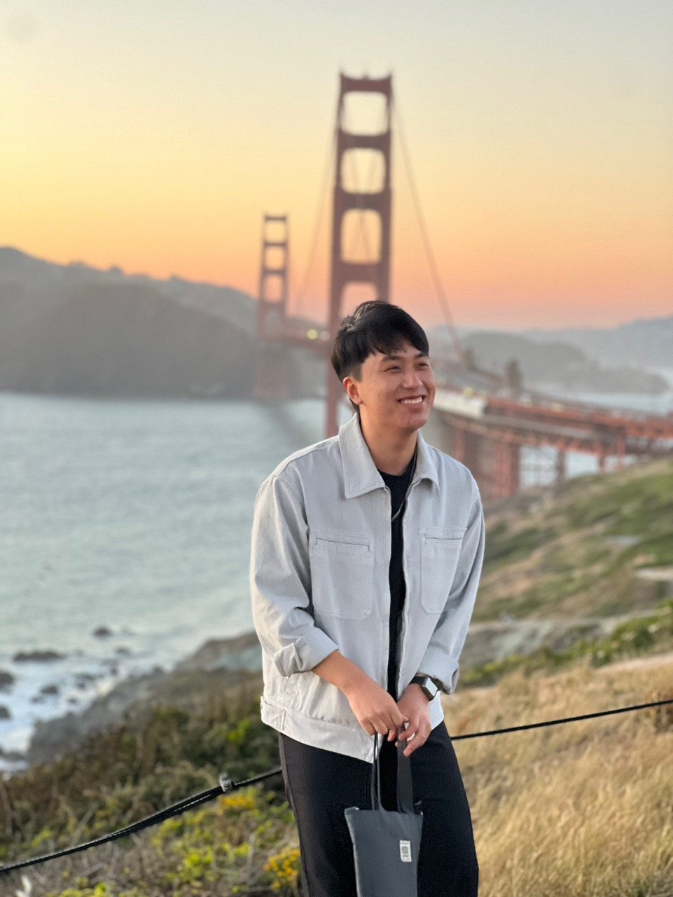

Jinwoo Ahn
Hey, what's up! I am a third year undergraduate student at UC Berkeley EECS.
I come from a multicultural background: I was born in South Korea, spent my teenage life in China, and now am here in the United States. Consequently, perhaps, I have a passion for language and believe in the power of it serving as a bridge to connect people.
I act under the following philosophy: stay disciplined instead of motivated. I believe that completing tasks that you are responsible for regardless of motivation is the definition of professionalism. One of the promises that I made myself is to do 50 push-ups every day, at the very least. Although this may seem trivial, the true intentions behind it for me is to practice being disciplined.
Furthermore, I am broadly interested in Software Development, Artificial Intelligence/Machine Learning, and Startup Businesses. I work in these areas in hopes of my work leaving a positive impact in our society.
Email | LinkedIn | Google scholar
Recent News:
- [5/24/2023] I am now a volunteer instructor for Microsoft TEALS.
- [2/28/2023] "Goal Driven Discovery of Distributional Differences" is on arXiv.
More About Me:
Research:
I do research primarily in Natural Language Processing (NLP), although I am also taking a glance at Computer Vision (CV) at the moment. Specifically, I work on scalable oversight, supervising machines to perform tasks that humans alone find difficult. This way, I believe the problems and concerns about AI replacing humans can be alleviated to a certain extent while maintaining efficiency.
Papers:
arXiv 2023: Goal Driven Discovery of Distributional Differences via Language Descriptions
Teaching:
I also have a passion for teaching. I usually seek to teach classes that I particularly enjoyed as I want students to have a similar or better experience in the class. Currently, I am an instructor for the Microsoft TEALS program where I teach college-level functional programming to high school students. I am also putting together self-learning materials for beginners in Machine Learning during my spare time.
Roles:
Instructor: Microsoft TEALS
Author: Machine Learning Fundamentals by Me
AI: CS 61C (Computer Architecture)
Industry
Oftentimes, I pursue various internships on Software Engineering/Development and Machine Learning Research/Engineering. In the summer of 2022, I had a chance to work with a startup company called Dashlabs.ai (YC W21) as a software engineering intern.
Companies:
Summer 2022: Dashlabs.ai (YC W21)
Miscellaneous:
1. I do 50 push-ups every day, a minimum.
2. I try to maintain my weight at around 170-180 lbs.
3. I do not consume food after 9:00 PM.
4. I drink 3 bottles of water everyday, at minimum.
5. I usually sleep after midnight.
Collaboration:
Berkeley Haas School of Business
In the fall of 2022, I had the chance to collaborate with researchers at the Computational Culture Lab to work on topics such as computational linguistics and semantic geometry spaces.
Berkeley School of Education
In the summer of 2022, I had the chance to collaborate with the School of Education to conduct research on computational second language acquisition and retention methods.